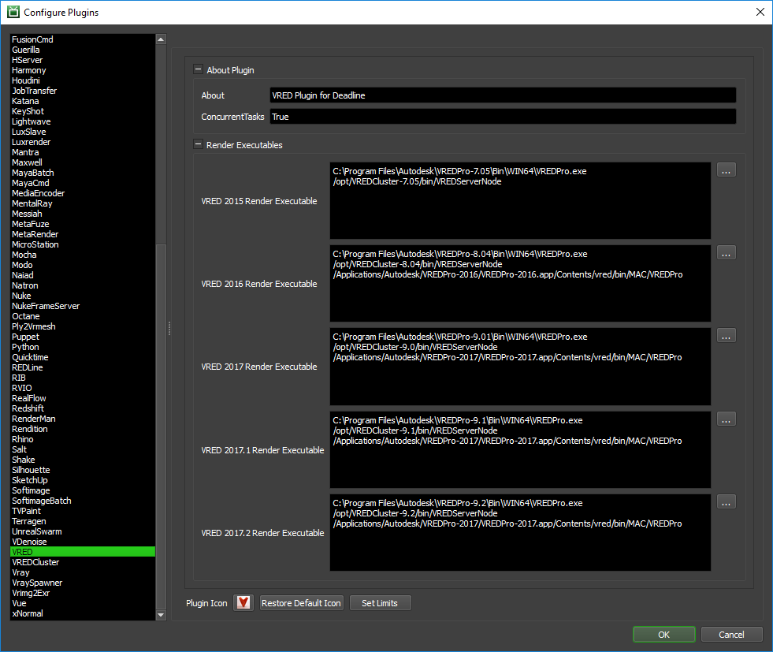

VRED¶
Note
The current version of Deadline only supports VRED 2020.0-2024.0 (inclusive). Due to the recency of the VRED 2024.0 release (at the time of writing), there may be minor bugfixes required in Deadline to ensure reliable support of VRED 2024. Please review new installation steps that are specific to VRED 2024 (and beyond).
To run the Linux version of VRED Render Node (VREDServerNode executable), please ensure that you run Linux with the appropriate dependencies – including a stable release of the GNU C Library with X-Server installed, per Autodesk’s System Requirement guidelines (referenced below by VRED version):
Please note the hardware requirements and ensure replacement OpenGL libraries such as MESA are available for headless machines.
Job Submission¶
You can submit jobs from within VRED by installing the integrated submission script, or you can submit them from the Monitor. The instructions for installing the integrated submission script can be found further down this page.
To submit from within VRED, press the Submit to Deadline button in the Thinkbox Menu. If the Submit to Deadline button is missing, check to make sure that the submitter is installed correctly then restart VRED.
Submission Options¶
The general Deadline options are explained in the Job Submission documentation, and the Draft/Integration options are explained in the Draft and Integration documentation.
VRED-specific options follow:
Version: Which version of VRED to use (12.X=2020.X, 13.X=2021.X, 14.X=2022.X, 15.X=2023.X, 16.X=2024.X). Substitute ‘X’ with VRED’s minor version number.
[VRED Options Tab]
Job Type: What type of job to submit (Render, Render Queue, Sequencer)
Submit VRED Project File: If this option is enabled, the project file will be submitted with the job, and then copied locally to the Worker machine during rendering.
Render View/Camera: The name of the viewpoint or camera from which to render.
Note: If there is an identically-named camera to a viewpoint’s name, then that viewpoint will take precedence as the rendered view.
Image Size Presets: Popular presets for common image sizes/resolutions
Note: This option functions similar to its equivalent in the stock Render Options window
Image Size: The image size in pixels (width and height)
Note: If an image size preset is chosen, then the corresponding amount of pixels for horizontal and vertical resolution are automatically filled in. Otherwise, you can specify a custom resolution.
Printing Size: The printing size in centimeters (width and height)
Resolution (px/inch): The printing resolution in pixels per inch (width and height)
Render Animation: If checked, allows one to specify animation clip settings including: animation clip, frame range to render
Use GPU Raytracing: Attempts to apply GPU raytracing to the rendering process (if sufficient hardware is available)
Render Quality: Rendering method - including number of image samples used. Raytracing is the default.
Type The animation type (Clip or Timeline)
Animation Clip: A pre-defined animation, where its frames will be distributed for rendering.
Note: Upon selecting an animation clip entry, if “Use Clip Range” is enabled, then a corresponding frame range will update to reflect that animation clip’s timeline.
Use Clip Range If enabled, then whole animation clip will be rendered. Otherwise, only a sequence from the selected clip will be rendered.
Frame Range: The start and end frames to render (separate by a hyphen)
Frames Per Task: The amount of frames that a Deadline worker node should render as one complete task
Sequence Name: The name of the sequence to render; if empty all sequences will be rendered.
[Additional Options]
Dimensions: The dimensions of the final rendered image.
Super Sampling Factor: The super sampling factor to use when rendering.
Background Color: The color of the background to use when rendering.
Include Alpha Channel: Whether or not the the alpha channel should be included.
Premultiply Alpha: Whether or not the alpha channel should be premultiplied.
Tonemap HDR: Whether or not tonemapping should be applied to .hdr files.
DPI: Dots per inch when rendering a still frame.
Export Render Passes: If the render quality is set to raytracing you can export separate render passes.
Export Meta Data: Whether or not Meta Data should be embedded into the rendered files.
Region Rendering Options¶
If submitting from the integrated submitter you can choose to submit a region rendering job. You can also submit a dependent assembly job to assemble the image when the main region job completes.

The following options are available:
Enable Region Rendering: If enabled, the frame will be split into multiple tiles that are rendered individually and can be assembled after.
Submit Dependent Assembly Job: Submit a job dependent on the region job that will assemble the tiles. If doing a Jigsaw animation, a separate job will be created for each differently named output file.
Cleanup Tiles after Assembly: If enabled, the tiles will be deleted after assembly.
Error on Missing Tiles: If enabled, the assembly job will fail if any of the tiles are missing.
Error on Missing Background: If enabled, the Draft Tile Assembler job will fail if the background file is missing.
Assemble over: Determine what the Draft Tile Assembler should assemble over. Options are a blank image, previous output, or specified file.
Background Image File: If “specified file” is selected, this option specifies the background image that will be used during tile assembly.
Troubleshooting Render Issues¶
This guide will explain how to isolate a render issue away from the Deadline Worker application.
Please try walking through the steps below. Our goal is to recreate the issue outside of the Deadline Worker environment, to see if there is an issue with the scene file / render machine.
Note that VRED dynamically creates a Python script for every task, which must be fetched in order to troubleshoot.
The steps here use Windows paths. Deadline’s temporary directories are stored in the Worker Local Data Storage, refer to that page for your operating system’s equivalent.
First we need a copy of the script used for rendering. To do this, requeue the job that fails and after a Worker creates a failing task report mark the Worker disabled from the Monitor.
Become a power user from the Tools menu at the top of the Monitor.
Right click the Worker and choose ‘Disable’. We do this to preserve the Worker’s temporary directory as we’ll need to pull a file from it.
4. From a task report find the line starting with ‘Full Command’. In this example case, that line is:
2023-10-10 16:07:17: 0: INFO: Full Command: "C:\Program Files\Autodesk\VREDPro-16.0\Bin\WIN64\VREDPro.exe" "C:\ProgramData\Thinkbox\Deadline10\workers\worker-name\jobsData\6525d8cd0c7423a9f8e261e9\test-file.vpb" "C:\ProgramData\Thinkbox\Deadline10\workers\worker-name\jobsData\6525d8cd0c7423a9f8e261e9\thread0_tempF8Fgq0\VRED_RenderScript.py" -nogui
5. Go to the C:\ProgramData\Thinkbox\Deadline10\workers\worker-name\jobsData\ directory on the render node. This is the Worker Local Data Storage It’s important we test on the render node that the job failed on, in case this is a local configuration issue. Within it is a folder the Worker uses as a temporary working space for jobs being rendered. Inside it or in one of its sub-folders will be VRED_RenderScript.py. Make a copy of that file on the render node and make a note of where.
The VRED_RenderScript.py is the file that is written dynamically for each submitted job.
With the executable path, the scene file and that script you can now impersonate the Worker on a command prompt:
"C:\Program Files\Autodesk\VREDPro-16.0\Bin\WIN64\VREDPro.exe" "\path\to\test-file.vpb" "\path\to\VRED_RenderScript.py" -nogui
Check the resulting output for errors or warnings. If the render succeeds without issue, make a copy of the text log and contact support, having both the failing log and working log will help in troubleshooting.
Re-enable the Worker that was disabled in step 1 by right clicking the Worker and choosing ‘Enable’.
If the render still fails, then the issue would be either in the scene or in the render node itself. Try testing with a simpler scene, or on a different render node to identify which of the two is the issue.
Plugin Configuration¶
You can configure the VRED plugin settings from the Monitor. While in power user mode, select Tools -> Configure Plugins and select the VRED plugin from the list on the left. Support is included for VRED versions that are listed at the top of this guide.
Note, if the executable supports a MAJOR.MINOR.REVISION (9.0.123) numbering system in its path, then you will need to configure the explicit exe path to the particular revision that you have installed on your machines. Deadline does not track every possible revision available or indeed where it might be custom installed to, so a studio should verify their exe paths are correct for each application version they choose to use with Deadline. Multiple exe paths can still be declared and the first one that is found on a particular Worker on a particular platform will be used from the exe list.
Render Executables
VRED Executable: The path to the VRED executable file used for rendering. Enter alternative paths on separate lines. Different executable paths can be configured for each version installed on your render nodes.
Ensure you use the following VRED executables only:
- VRED Pro (requires a VREDPro license)
Windows: VREDPro.exe
- VRED Server Node or VRED Core (requires an ‘Autodesk Raytracing Cluster Module for Autodesk VRED 20xx’ license where xx is the YEAR)
Windows: VREDServerNode.exe
Linux: VREDServerNode
Integrated Submission Script Setup¶
The following procedures describe how to install the integrated VRED submission script. This script allows for submitting VRED render jobs to Deadline directly from within the VRED editing GUI.
Additional notes¶
Submit VRED to Deadline dialog window is always-on-top and non-modal (main VRED UI is accessible)
As a convenience, the Script Editor is set to be always-on-top for older versions of VRED
- Many option values (or settings) in the Submit VRED to Deadline UI (VRED Options tab) Setting values will persist:
Settings include: Image Size Preset, Animation Clip, Animation Type, Use Clip Range, Render Job Type, Render Animation, GPU Ray Tracing
Render output defaults to .PNG file output format
Note: timeline will only briefly become visible (if it wasn’t already visible) upon opening the Submit VRED to Deadline UI.
Manual Installation¶
Due to technical limitations in VRED, we are unable to provide an automated submitter installer at this time. The script and the following installation procedure has been tested with VRED 2016 and later.
On Windows, copy the file:
[Repository]\submission\VRED\Client\DeadlineVREDClient.py to [VRED Install Directory]\lib\python\Lib\site-packages
From within VRED open the preferences window ( Edit -> Preferences ) and add the following lines to the script tab:
import DeadlineVREDClient
DeadlineVREDClient.InstallDeadline( vrMainWindow )

When using VRED 2024 or later, you will need to disable the Python Sandbox option (found in the main Preferences dialog under the Script tab). Note: the Python Sandbox option disallows important custom or non-standard Python modules (including Deadline); disabling Python Sandbox allows Deadline to function correctly. Please assess any security concerns you might have in advance of disabling the Python Sandbox option.
FAQ¶
Can VRED render non-GUI via Deadline?
Yes. We already pass an additional argument at render time (-nogui) to force a non-GUI session of VRED Pro is run during network rendering. If you would prefer to save on your VRED Pro license being used in non-GUI mode, then please consider using “VRED Server Node” instead which has no GUI. See the next FAQ for more information.
Is VRED via Deadline able to render using VRED Server Node (render node) Licenses?
Yes. In order to render using VRED Server Node (render node) licenses (and save using expensive VREDPro licenses) you should edit the VRED Render Executable path to “VREDServerNode.exe” instead of “VREDPro.exe”. Note, you must actually own some “Autodesk VRED Render Node 20xx” licenses (where xx is the YEAR) to be able to use the “VREDServerNode.exe” executable as it does NOT use the same license that “VREDPro.exe” uses. Please note that we believe these “Autodesk VRED Render Node” licenses are actually referred to on the ADSK pricing list as “Autodesk Raytracing Cluster Module for Autodesk VRED 20xx” if you have trouble finding them via your ADSK reseller. In your Flexlm license file, the various licensed products will have these initials: VRED Server (VRDSRV), VRED Render Node (RCMVRD), and VRED Professional (VRDPRO), which will help you verify you have the correct licensing in place.
Can VRED be run as a service?
VRED can sometimes crash when running as a service. If VRED appears crashed, try running the Worker as a normal application instead of as a service to see if that fixes the problem.
Is macOS supported?
No.
Is VRED supported on Linux?
Yes, only the non-gui application ‘VREDServerNode’ is supported on Linux (use ‘clusterService’ for VREDCluster plugin).
VRED can’t find a display on my linux render node. Is there anything I can do about this?
Yes, The first thing you need to do is make sure that you have the correct packages installed. This can be done by running the following commands. On Ubuntu use:
>>> sudo apt-get install libXrender1 libXcomposite1 libXxf86vm1 libXdamage1 libXfixes3 libXdmcp6If you are using CentOS/RHEL use:
>>> sudo yum install libXrender libXcomposite libXxf86vm libXdamage libXfixes libXdmcpThe second thing that you need to do is make sure that the DISPLAY Environment Variable is set to “:0.0” if the Worker is running as a service in the application’s launch shell script file:
export DISPLAY=:0.0
In VRED the Deadline menu does not show up. What can I do?
In VRED you have to either open up a scene or create a new scene in order for the Deadline menu to show up. This is because VRED runs it’s preferences scripts before it initializes all of the VRED variables.
Is VRED Design supported by Deadline?
VRED Design is not supported for rendering or submitting from due to VRED Design’s Python API being “Read Only”, meaning we are unable to run external scripts, like our integrated submitters or plugin rendering logic.
Error Messages and Meanings¶
This is a collection of known VRED error messages and their meanings, as well as possible solutions. We want to keep this list as up to date as possible, so if you run into an error message that isn’t listed here, please visit the Thinkbox Help Centre and let us know.
Error: FailRenderException : VRED “14.X” render executable was not found in the semicolon separated list.
If you encounter this error message in Job Report, Deadline is unable to find executable path for VRED application.
Note that this may mean the specific version is not supported by Deadline officially.
However, you can do the following self-troubleshooting method to render using the current VRED version.
You can add current VRED version in the following files: [Repository]submissionVREDpluginsVREDVRED.param [Repository]submissionVREDpluginsVREDVRED.options
STDOUT: vrEGL: couldn’t find ‘libEGL.so’!
If you are using a headless Linux-based Render Node (i.e. no physical graphics card installed), you will need to install a replacement for OpenGL such as MESA to avoid the missing OpenGL libraries message as well as ensure X-server is running as per Autodesk VRED System Requirements guidelines (listed at the top):
>>> sudo -s >>> yum install redhat-lsb libX11 libXext mesa-libGL mesa-libGLU >>> yum groupinstall "X Window System"Reboot machine, run-level set correctly

{kind=link}
{kind=link}
{kind=link}
{kind=link}